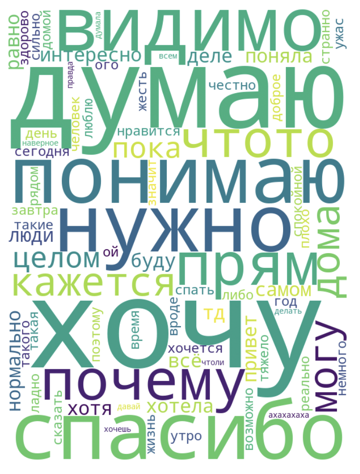

Для управления листай вниз

Ну,здравствуйте Дарья
Top-master🔝🔝🔝
Когда общаешься с человеком, не всегда осознаешь, насколько он важен для тебя.
А что, если представить это в цифрах?
(сорри, да это моя профессиональная деформация все к этому сводить)
Знала ли ты, что?
Мы написали друг другу уже
9008 сообщений
а ты, в частности
3640
Сразу видно кто любит пулять несколькми сообщениями)
При этом твои сообщения длиннее🤔
26 символов в среднем,
против моих 22
Ты отправила
100
голосовых сообщений!
На почти час времени
точнее
59 минут
это целый подкаст)
Кто из нас больше спрашивает?
А вот где ты точно выигрываешь — это в реакциях!
Мы отправили 319 реакций, из которых твои 226!
А это топ реакций:
А кто из нас чаще ошибается в словах?
Ну тут дмуаю очвидно)0)
А вот слова, которые ты чаще всего использовала

Все это, конечно, просто цифры. Главное — что за ними стоит!
Мне бы хотелось, чтобы наше общение вышло за пределы чатов🙏
Вот так я не хитро перевожу к своему любимому вопросу:
когда встретимся?)
Надеюсь, офлайн-часть подарка принесла тебе радость!
Жду здесь фидбек😉 @yvnggun